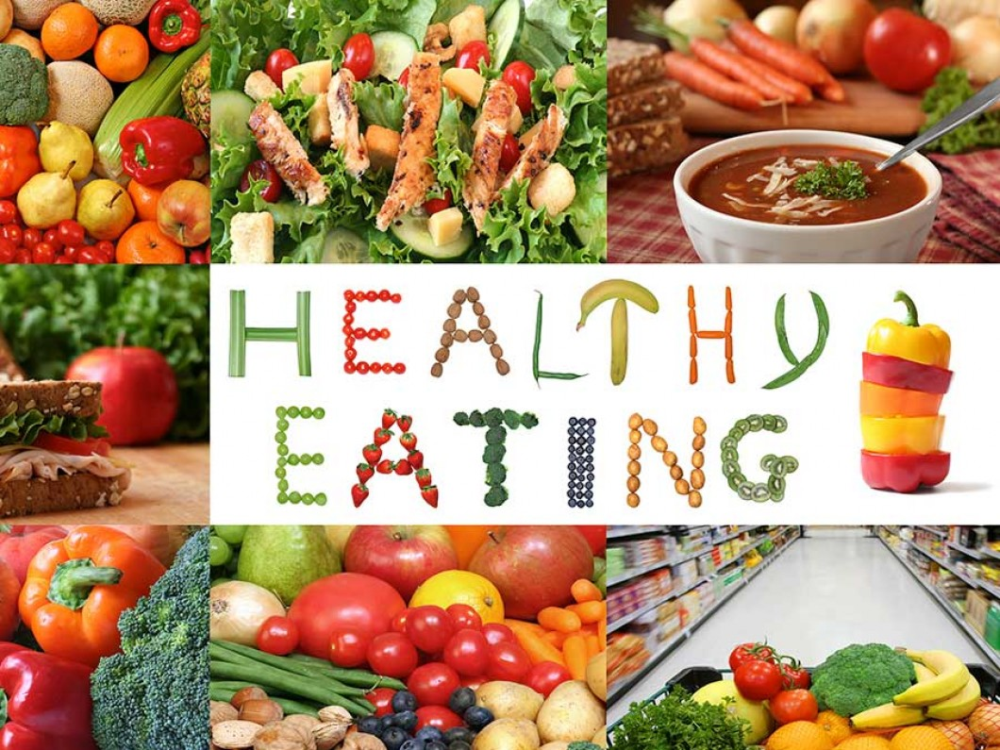
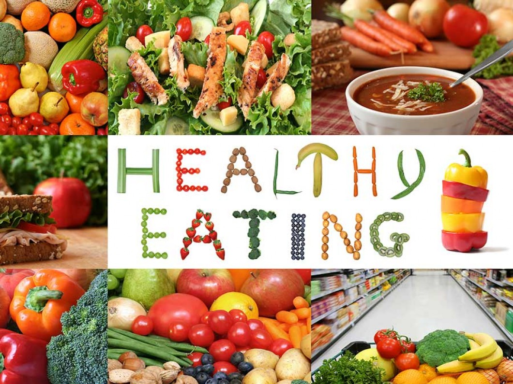

Government of Canada

 

Health Canada recommends eating 'plenty of vegetables and fruits, whole grain foods and protein foods'.
Instead of eating food from groups, Canadians are now encouraged to follow three guidelines on: what to eat regularly, what to avoid, and the importance of cooking and preparing meals at home.